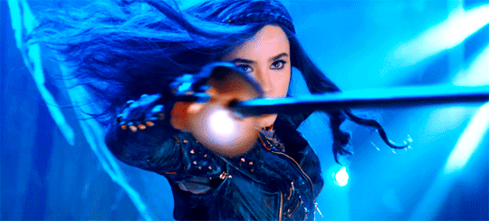

EVIE
No início do filme, Evie é vista fazendo badernas em uma área da Ilha dos Perdidos. Quando Malévola dá a notícia de que eles estão indo para participar da Auradon Preparatória, ela é a mais animada do grupo, principalmente por causa de como muitos príncipes moram lá. Malévola revela que seu plano para eles é usar a magia da Fada Madrinha para libertar os vilões da Ilha. Antes de sair, a Rainha Má dá Evie o que restava de seu Espelho Mágico que foi transformado em um espelho de mão para ajudá-la a encontrar as coisas. Após a chegada em Auradon, ela é cumprimentada por Audrey e Ben, dizendo que é uma princesa, já que sua mãe é uma rainha, mas Audrey informa que a Rainha Má não tem status real em Auradon, para tristeza de Evie. Depois de conhecer um estudante chamado Doug que lhes disse onde os seus quartos são, Evie rapidamente se apaixona com o quarto, mas imediatamente concorda com Mal que o quarto era nojento. Naquela noite, as meninas vão para o quarto de Carlos e Jay para verificar o que eles estavam fazendo. Enquanto eles estão se divertindo, Mal lembra que eles devem provar a seus pais que eles são maus, então ela pede a Evie para perguntar ao seu Espelho Mágico onde eles podem encontrar a Varinha Mágica. Evie tenta pedir ao espelho para dizer onde a varinha esta, apenas para ele mostrar a varinha de perto. No entanto, ela descobre onde a varinha é exibida o que os leva a um museu que continha muitos itens referentes a histórias de seus pais. No museu, Mal faz um feitiço em um segurança, fazendo ele dormir, assim eles poderiam entrar e pegar a varinha. O grupo tenta roubar a varinha, mas quando Jay tenta pegar o objeto, ele acidentalmente dispara um alarme; No entanto, Carlos é capaz de enganar a segurança fazendo pensar que ele era um mau funcionamento do sistema.
